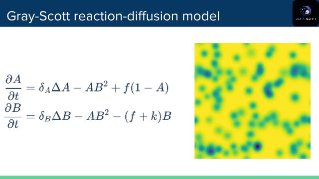

Our team, JEPADormi, took first place out of 25 teams at HacktheWorld(s), the first hackathon dedicated to world models and the JEPA architecture, sponsored by Yann LeCun. We definitely lived up to our team name that weekend, but those 24 hours of non-stop thinking and coding were absolutely worth it.
The challenge
We had 24 hours to build something around JEPA and world models. There were ten tracks on offer, and we went with Track 4: latent dynamics of physical fields, built on The Well (Ohana et al., 2024).
The Well is a 15 TB collection of 16 physics-simulation datasets, covering fluid dynamics, magneto-hydrodynamics, astrophysics, acoustics and active matter, all stored as spatiotemporal fields. That is exactly the continuous, high-dimensional modality JEPAs were built for, and it comes with a ready-made PyTorch loader.
The task was to train a video-JEPA-style model that predicts the next field state in latent space, and then use it to answer one question: does predicting in latent space give more stable long-horizon rollouts than the field-space neural-operator surrogates (FNO, U-Net) that The Well ships as baselines?
To keep things tractable in a day, we started at the small end of the range (gray_scott_reaction_diffusion, not the multi-terabyte ones) and measured the VRMSE of the decoded autoregressive rollout against the FNO and U-Net baselines at several horizons.
What we built
The answer to our starting question turned out to be a clear yes: V-JEPA was consistently better at long-horizon prediction. From there, we pulled on a few threads:
- A better metric. Plain pixel-value error is not really what we care about here. We want the model to respect the dynamics and the patterns, not to match individual cell values. So we experimented with Wasserstein distances and a style-transfer loss, using a style term built on the Gram matrices of VGG activations, in the spirit of Gatys et al 2015.
- Where it breaks. We looked into why V-JEPA underperforms on the static phases of the Gray-Scott reaction-diffusion system, and how that ties back to the anti-collapse losses (VICReg and SIGReg).
- What did it actually learn? Did the model genuinely capture the underlying PDE, or is it just a very good auto-encoder whose predictor lets it random-walk through latent space? Several preliminary results pointed toward the former: it really does seem to pick up the dynamics.

Thanks
Huge thanks to my teammates, Alexandre Duplessis, Jules Dupont and Arthur Gilles. Spending 24 hours in the trenches with them was the best part of it.
We could not have asked for a better setting to push on these questions. The organizers and mentors were brilliant, and some of the late-night debates with them about the current limits of V-JEPA and world models were easily a highlight of the weekend. Thanks as well to the jury for the recognition, and to Yann LeCun for sponsoring the event and for driving the vision behind this architecture.
This opened up a few directions I am genuinely excited about, and I already have some ideas for taking it further. More on that soon.